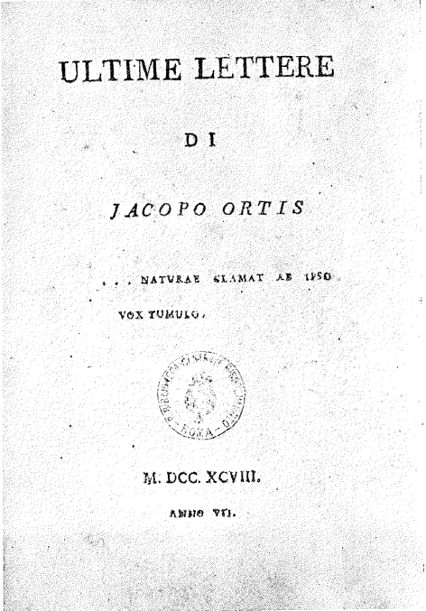
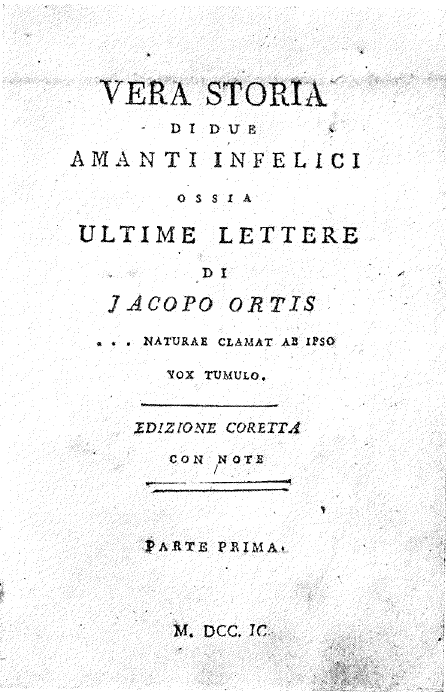
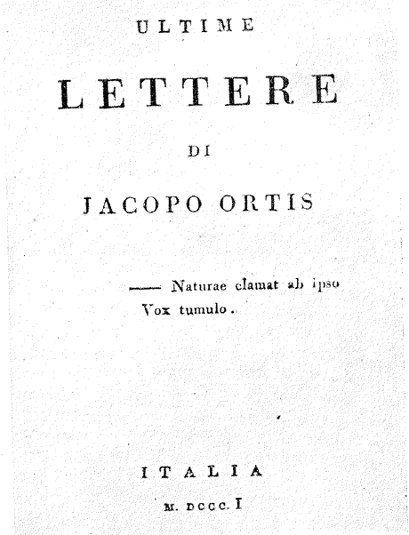
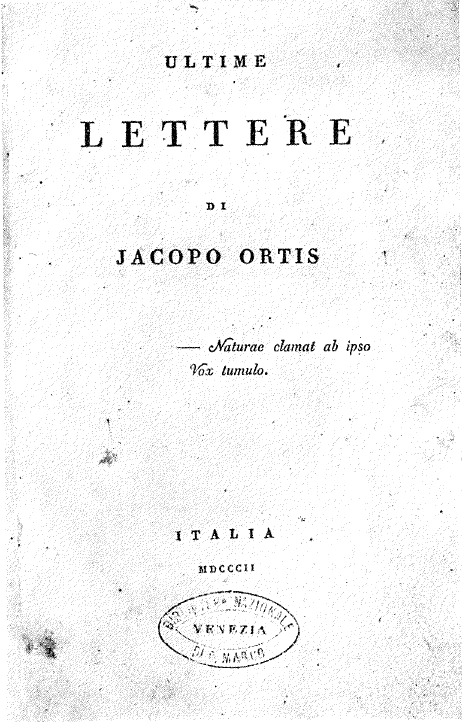
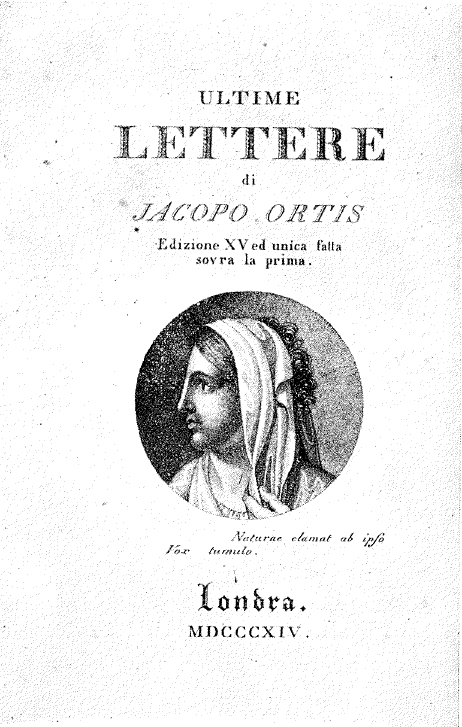
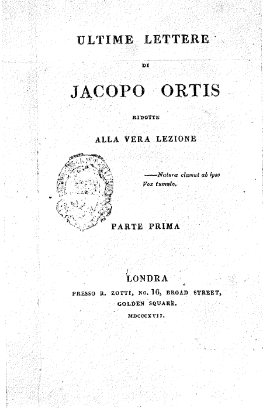

Introduction
Ortis Letters is a prototype of a digital scholarly edition of Ugo Foscolo’s epistolary novel Ultime lettere di Jacopo Ortis (The Last Letters of Jacopo Ortis). The novel did not reach its definitive form in a single act of publication: between 1798 and 1817 it passed through a series of printed versions, some supervised by the author and others issued without his consent, which differ from one another in text and extent. The edition sets out to make this textual history visible. It encodes the opening of three key editions, namely the editor’s notice or address to the reader and the first five letters, and presents their witnesses so that they can be compared directly on the Edition page.
Alongside the text, the website allows readers to explore the characters and places named in the variants (People and Places) and to follow the author’s life on an interactive timeline, on which the editions appear as they were published (Author).
The text is based on the National Edition by Giovanni Gambarin (1970), which prints the novel in its three versions of 1798, 1802 and 1817 and remains the standard scholarly reference. The choice and the organisation of the editions follow Gambarin’s; the project is therefore a reproduction of his work, enriched by the possibility of interacting with the text and of exploring the novel on several levels.
To the best of my knowledge, no openly available, machine-readable, multi-witness digital edition collates the printings of the Ortis for computational or pedagogical reuse: at the time of its last update, Patrick Sahle’s Catalogue of Digital Scholarly Editions (Sahle n.d.) lists no comparable resource for the novel. Existing digital transcriptions, such as those hosted by Wikisource (Wikisource n.d.) and the Biblioteca Italiana (Foscolo 2004), offer accessible plain-text versions of the work, but they do not encode textual variants and are not structured for computational analysis. Ortis Letters was conceived to address this gap, as an extendible model that provides the textual variation of the novel in a structured and reusable form. Research on the author is also supported by institutions such as the Centro di Ricerca Interuniversitario Foscolo (CRIF n.d.).
Editorial principles
Gambarin explains that his edition follows a criterion proposed by Ugo Foscolo's scholar and collector Domenico Bianchini, according to which an edition of the Ortis that meets the needs of "scholars should present separately the editions to which Foscolo attended directly" (Gambarin 1970, LXXIX). These are:
- the Bologna edition of 1798, begun under Foscolo’s care and later published without his authorisation under the title Vera storia di due amanti infelici (see below);
- the Milan edition of 1802, the editio princeps authorised by Foscolo (see below);
- the London edition of 1817, which also incorporates the version published in Zurich in 1816 (see below).
This digital edition follows the same principle, for clarity and for consistency with the scholarly literature. Each edition is therefore encoded as a separate text, with its own base text (the lemma) and its own set of witnesses, that is, the other printed versions that are collated with it and recorded as variants.
Witnesses and their relations
The relations between the three editions are easier to follow when their witnesses are placed on a single diagram (Fig. 1 and Table 1). The upper lane shows the Bologna edition: Foscolo’s unfinished text (lem), the unauthorised Vera storia (A) and its two reprints (B and C). The central lane shows the Milan edition, in which the revision of the copy sent to Goethe (M) leads to the editio princeps of 1802 (I), collated with the reprints that Foscolo saw and approved (II and III). The lower lane shows the London edition, whose witnesses are the 1802 print (Gt), the Zurich print of 1816 (Z) and the base text of 1817 (L).
The three files share some of their witnesses, which is why the same sigla recur: witness I of the Milan file is the Genio Tipografico print that appears as Gt in the London file, and Z and L are collated in the Milan apparatus as well.
| Siglum | Edition | Date | Place and printer | Status |
|---|---|---|---|---|
| lem | Bolognese draft (Foscolo’s first 138 pages) | 1798 | Bologna, Marsigli | Printing interrupted; never published in this form |
| A | Vera storia di due amanti infelici | 1799 | Bologna, Marsigli | Unauthorised; continued by Sassoli |
| B | Vera storia, second edition | 1799 (issued 1800) | Bologna | Unauthorised reprint |
| C | Vera storia, third edition | 1801 | Bologna | Unauthorised reprint |
| M | Copy for Goethe (Mainardi project) | 1801 | Milan | Foscolo’s revision; project abandoned |
| I (Gt) | Ultime lettere di Jacopo Ortis, editio princeps | 1802 | Milan, Genio Tipografico | First edition authorised by Foscolo |
| II | “Mantovana” reprint | 1802 | Milan | Famous reprint recognized by Foscolo |
| III | Agnello Nobile reprint | 1802 (imprint: London, 1803) | Milan, Agnello Nobile | Famous reprint recognized by Foscolo |
| Z | Zurich edition | 1816 (imprint: London, 1814) | Zurich, Orell Füssli | Incorporated in L |
| L | London edition | 1817 | London, John Murray | Base text of the London edition |
The Bologna edition (1798–1801)
Foscolo’s draft (1798)

In 1798, during his stay in Bologna, Foscolo agreed with the printer Iacopo Marsigli to print the very first edition of Ultime lettere di Jacopo Ortis, and printing began towards the end of that year. The arrangement did not survive the political and military events of the following months: Foscolo enlisted as a volunteer in the Mobile National Guard of Bologna, which kept him away from the city for several months, and he could therefore not supervise the printing to its end (Gambarin 1970, XIX). The episode can be followed on the timeline.
Marsigli, unwilling to lose the sheets that had already been printed, turned to Angelo Sassoli, a Bolognese jurist, to bring the work to an end. The part written by Foscolo extends over the first 138 pages. This portion, which was never published in this form, is the base text of the Bologna edition and the lemma of its apparatus. Gambarin (1970) transcribes it together with the later variants introduced by Marsigli and written by Sassoli, which are recorded here as witnesses.
Vera storia di due amanti infelici (1799–1801)

The novel reached print in 1799 under a new title, Vera storia di due amanti infelici ossia Ultime lettere di Jacopo Ortis (witness A). It was published without Foscolo’s authorisation and with the continuation written by Sassoli. After the arrival of the Austrian forces in Bologna in the summer of 1799, the text was also reworked for the new political situation, with cuts, additions and notes, so that its revolutionary and anti-Christian ideas would not prevent the circulation of the book.
Two reprints followed. The second edition (witness B) carries the same title page and the same date as the first but was in fact issued in 1800; the third (witness C) is dated 1801. The reprints appear to have been set from earlier copies with further, often rough, modifications, and they contain additional textual differences (Gambarin 1970). Comparing the three witnesses makes it possible to separate Foscolo’s own writing from the changes introduced by the unauthorised printings.
The Milan edition (1802)
The Mainardi project and the copy sent to Goethe (witness M)

After the publication of the Vera storia, Foscolo resumed work on the novel and began to prepare a new edition with the Milanese printer Mainardi, but the project was soon abandoned after disagreements between the author and the printer. A surviving copy of the first part, associated with it, was sent to Johann Wolfgang von Goethe; it is designated M in this edition and dated 1801.
Witness M stands between the early Bolognese text and the authorised edition of 1802: it documents Foscolo’s revision of the novel before its publication by the Genio Tipografico. See also the timeline.
Editio princeps (Genio Tipografico, 1802), witness I

The first edition authorised by Foscolo appeared in Milan in 1802 from the press of the Genio Tipografico (witness I), and its editor’s notice is dated Milan, October 1802. In the notice the editor, who presents himself as the depositary of the autographs, disowns every edition that differs from this one. The edition marks a decisive stage in the history of the novel, following the interrupted Bologna printing and the unauthorised version of 1799. See the timeline.
Further witnesses: II, III, Z and L
The Milan apparatus collates four further witnesses. Witness II is the edition that Foscolo himself called the “Mantovana”, and witness III the Milan edition published by Agnello Nobile; both belong to the prints that Foscolo saw and approved (Gambarin 1970). Z and L, the Zurich and London editions of 1816 and 1817, are discussed below. Their presence allows the Milan text to be read against both its predecessors and the later forms of the novel.
The London edition (1817)
In 1815 Foscolo left Milan rather than take an oath of allegiance to the Austrian authorities, and went into exile (timeline). The last two stages of the history of the novel belong to this period: the Zurich edition of 1816 and the London edition of 1817. The London file collates the text of 1817 (L) with the Genio Tipografico print of 1802 (Gt, witness I in the Milan file) and with the Zurich edition (Z), in order to trace the changes introduced in the last stage of the publication history.
The Zurich edition (1816), witness Z

Witness Z was printed in Zurich by Orell Füssli in 1816, although its title page gives London as the place of publication and 1814 as the dates, to avoid any cases of censorship. The edition directly precedes, and is incorporated in, the London publication of 1817. See the timeline.
The London edition (1817), witness L

Witness L was published in London by John Murray in 1817. It is the last edition included in this comparison and the base text of the London file: read against Gt and Z, it makes visible the revisions that distinguish the final text from its predecessors. See the timeline.
Encoding
Each edition is transcribed in its own XML file, encoded according to the TEI P5 Guidelines (TEI Consortium n.d.); for the general workflow of a TEI edition see Burghart (2017). The running text and the apparatus were transcribed by hand from
Gambarin (1970). The header of each file describes the witnesses
(listWit), the sources, the editorial choices, and the people and places named in the text
(listPerson and listPlace), which are linked to external authority records where
possible.
The variants are recorded with the parallel segmentation method. Every point of variation is an
<app> that contains a lemma (<lem>) and one or more readings
(<rdg>), each of them assigned to its witnesses through @wit. In addition,
every entry carries a @type that describes the kind of change: punctuation, capitalisation,
orthographic, morphological, lexical, word order, addition, omission, rewriting, layout, paratext, or a
combination of these (mixed, with the components listed in @subtype). The website
uses this type to label the variants and to filter them.
<app type="orthographic">
<lem wit="II M Z L">sacrificio</lem>
<rdg wit="III">sagrificio</rdg>
</app>People and places are tagged with <persName ref="#JO"> and
<placeName ref="#PD">, where the reference points to the entry in the header; the same
identifiers are used in the data files that feed the People and Places tabs. Author’s notes are encoded with
<note resp="#UF"> and italics with <emph rend="italic">.
The editorial principles are declared in the header of each file: original spellings and quotation marks are retained; end-of-line hyphens are removed and the words rejoined; page breaks are not recorded. A stylesheet (XSLT) turns the XML into the page that readers see. The XML files, the stylesheet and the scripts are available on GitHub.
Website
The website is designed around three activities: reading, comparing and exploring. The Edition page shows the text of one edition at a time (Bologna 1798, Milan 1802, London 1817) and lets readers open up to four windows side by side, each showing a different witness, with synchronised scrolling. The numbered markers in the text open the corresponding entry of the apparatus in a panel on the right, and variants can be filtered by type. The people and places named in the text open a small window with a short description and a link to the Explore page.
The Explore page has three tabs. People shows a graph of the relations between the characters and the figures mentioned in the text; Places shows the places on an interactive map; Author is a vertical timeline of Foscolo’s life, in which the editions of the Ortis appear as they were published and can be opened from there. The descriptions of people, places and events are stored in separate data files, so that they can be extended without changing the code.
The intended users are scholars of Foscolo and of textual criticism, students of digital humanities and digital editing, and curious readers who want to see how a famous text changed over time. Digital editions can also address machines as well as human readers, and for this reason the data behind the pages are kept open and structured. The design is deliberately simple, with muted colours, and the pages can be used with the keyboard.
Bibliography
Primary sources
- Foscolo, Ugo. 2004. Ultime lettere di Jacopo Ortis. Roma: Biblioteca Italiana. http://www.bibliotecaitaliana.it/scheda/bibit001627.
- Gambarin, Giovanni, ed. 1970. Ultime lettere di Jacopo Ortis. By Ugo Foscolo. Edizione nazionale delle opere di Ugo Foscolo 4. Firenze: Le Monnier.
- Terzoli, Maria Antonietta, ed. 2012. Ultime lettere di Jacopo Ortis. By Ugo Foscolo. Roma: Carocci.
Secondary sources
- Gentili, Sandro. 1978. I codici autobiografici di Ugo Foscolo. Roma: Bulzoni.
- Nicoletti, Giuseppe. 1978. Il “metodo” dell’“Ortis” e altri studi foscoliani. Firenze: La Nuova Italia.
- Scotti, Mario. 1997. “Foscolo, Ugo.” In Dizionario biografico degli italiani, vol. 49. Roma: Istituto della Enciclopedia Italiana. https://www.treccani.it/enciclopedia/ugo-foscolo_(Dizionario-Biografico)/.
- Terzoli, Maria Antonietta. 2004. Le prime lettere di Jacopo Ortis: Un giallo editoriale tra politica e censura. Roma: Salerno Editrice.
Resources and further reading
- Baillot, Anne, and Anna Busch. 2021. “Editing for Man and Machine: Digital Scholarly Editions and Their Users.” Variants 15–16: 175–87. https://journals.openedition.org/variants/1220.
- Burghart, Marjorie. 2017. Creating a Digital Scholarly Edition with the Text Encoding Initiative. DEMM project, Erasmus+ Intellectual Output IO2. https://ec.europa.eu/programmes/erasmus-plus/project-result-content/cfb03c8e-6765-477e-aa4d-e2b162f57068/IO2_Creating%20a%20digital%20edition%20with%20the%20TEI.pdf.
- Centro di Ricerca Interuniversitario Foscolo (CRIF). n.d. Accessed October 2026. https://www.centrofoscolo.org/.
- De Dominicis, Ilaria. 2026. Ortis Letters. GitHub repository. https://github.com/theair-hub/OrtisLetters.
- Sahle, Patrick. n.d. Catalogue of Digital Scholarly Editions. Accessed October 2026. https://dig-ed-cat.acdh.oeaw.ac.at/.
- TEI Consortium. n.d. TEI P5: Guidelines for Electronic Text Encoding and Interchange. Accessed October 2026. https://tei-c.org/guidelines/P5/.
- Wikisource. n.d. Accessed October 2026. https://wikisource.org/.
Disclaimer
The source of the edition is Gambarin (1970), as stated above. Copyright law allows a limited amount of text to be reproduced for study purposes, but not much more: for this reason only the opening of each edition is transcribed, and the project makes no commercial use of it. The website and its materials are released under a CC BY-NC 4.0 licence.
The text of the 1817 XML file, without the apparatus, is taken from the Biblioteca Italiana (Foscolo 2004), which publishes it under a CC BY-NC licence. Everything else was transcribed by hand. The website and its materials were produced with the help of Claude, an AI assistant.
If you would like to collaborate, the instructions are in the README of the project on GitHub; you can also write to ilaria.dedominicis2@studio.unibo.it.
Credits and citation
Ortis Letters was created by Ilaria De Dominicis for the course Digital Scholarly Editing: Theory, Methods and Practice at the Alma Mater Studiorum, University of Bologna.
To cite this edition: De Dominicis, Ilaria. 2026. Ortis Letters: A Digital Edition Prototype of Ugo Foscolo’s Ultime lettere di Jacopo Ortis. Alma Mater Studiorum, University of Bologna. https://github.com/theair-hub/OrtisLetters.